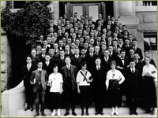

UC Dentistry

In the years after World War I, the field of dentistry became increasingly committed to educational reform. Nationally the immediate cause for concern was the proliferation of proprietary dental schools, unconnected with universities, which were turning out graduates with diplomas, but limited skills. Although the dental department had formally affiliated with the University in 1907, UC funds did not sufficiently subsidize the costly technical curriculum and numerous instructor salaries. The administration of the college still depended on fees generated by tuition, and enrollments grew to their highest level in the college’s history. In 1918-1919 182 students were enrolled, while in the postwar 1920s enrollment steadily rose: 1919-1920: 230; 1920-1921: 337; 1921-1922:393; 1922-1923: 462, leveling off in 1923-1924 at 448. School of Dentistry class of 1923
“The work of the School is greatly handicapped not only by the inability of the teachers of the medical sciences at Berkeley, twelve miles distant, to cooperate in the instruction of dental students, but also by the unconcern for the correlations between clinical medicine and clinical dentistry in the instruction of medical and dental students, which seems to be shared equally by the Medical and Dental Schools. ”
- Gies, Dental Schools in the United States, p 272
- Gies, Dental Schools in the United States, p 272
Well before World War I, the Flexner Report exposed severe deficiencies in American medical education, prompting extensive reform. In 1922, the Carnegie Foundation commissioned a similar report on the status of American dental education. Published in 1926 as the Gies report, the study was conducted by William Gies, a Columbia biochemistry professor who had founded the Journal for Dental Research in 1918. He recognized that of all the health professions, dentistry had the closest correlation with medicine, and thus shared its achievements and problems. Consequently, his report also briefly evaluated the medical schools connected with the dental schools that he encountered. Like Flexner before him, Gies was disturbed by the medical school’s geographic split between basic science on the Berkeley campus and clinical instruction at San Francisco, noting “this condition prevents effective cooperation between the school of Medicine and the College of Dentistry in teaching the medico-dental subjects to students of dentistry.” He further found that this separation was carried over to the clinical environment at Parnassus, where “teachers of medical subjects did not give dental students instruction in clinical medicine; teachers of dental subjects did not give medical students instruction in clinical dentistry.”
Gies traveled to the University of California in April of 1922 and conferred with dentistry Dean Guy S. Millberry to do a complete survey of the university’s dental college. He described a school housed in the Dental/Pharmacy building utilizing 39,200 square feet of space that contained an impressive dental infirmary with 128 chairs and special facilities for children, oral surgery and roentgenography. He noted approvingly that the college had its own library containing 3800 bound volumes related to dental subjects and was supervised by a full-time librarian. In another positive note, he acknowledged Millberry’s program intended to “create a demand for good dental service” by placing “dental graduates in various institutions, including public schools ... teaching hospitals…and institutional clinics of various sorts.”
From his report, it is evident that Dr. Gies was both impressed and irritated with the UC College of Dentistry’s program. On one hand the college’s highly coordinated research program “is the most comprehensive investigation now in progress in dentistry.” He noted that a special fund for the promotion of dental research had been set up by the University in which five-year grants from the American Dental Association and the Carnegie corporation were matched by the University Regents. With the collaboration of dental faculty and the warden of San Quentin, in 1924-1925, a dozen research programs were in progress: studying the effects of nutrition and the etiology of dental caries, anatomical studies of the salivary glands and radium therapy in oral cavity infections. Ongoing studies included the relations of bacteria to gum disease, the “presence and possible role of anaerobic bacteria in dental infections”, and various microbiological and nutritional studies of pyorrheic inflammation in trauma, scurvy and Vincent’s angina.”

Guy S. Millberry
A versatile and able Dean, Guy Millberry pursued reform in the area of admissions requirements and by 1929 college work was established as a fixed pre-dental requirement at the UC College of Dentistry.
>> UC Pharmacy
{% include footer.html %}